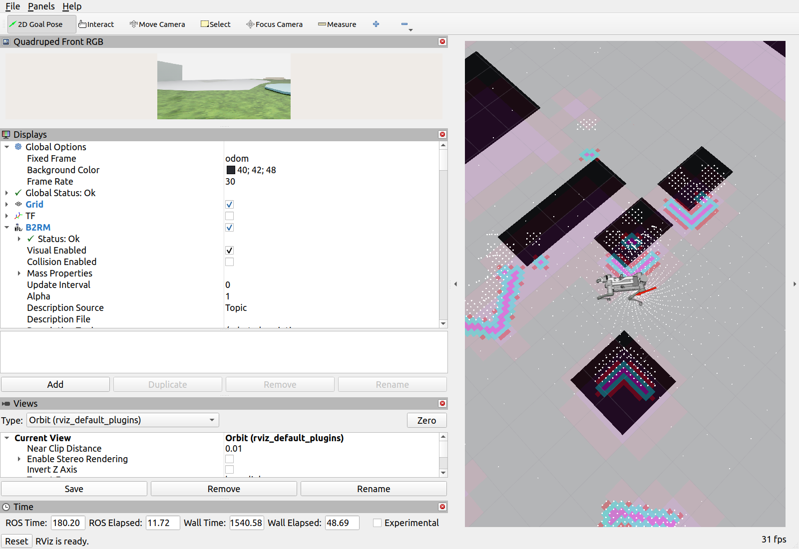

Isaac＋Nav2＋RViz：两个导航目标通过
2026-11-10 · 冻结 MoE 26399 · 0次恢复 · 实时系数约0.237
从(-50.25, -60.25)出发，四足到达(-39.5, -50.8)，再通过waypoint返回本轮已走过的点。每个目标分别检查Nav2结果、实际位置、低速及稳定保持1秒；容差0.75m。
| 目标 | 实际路程 | 仿真 / 墙钟耗时 | 终点误差 |
|---|---|---|---|
| 首个CLI目标 | 17.802 m | 36.570 / 154.228 s | 0.624 m |
| 第二个waypoint | 4.620 m | 32.785 / 137.846 s | 0.644 m |
还验证了无效waypoint (10000,10000)：没有全局路径时拒绝请求，保留原目标编号并继续完成。
原始同轮双窗口录屏
610.7秒 · 1920×660 · 10 fps · 4.88MB。采集时将两个窗口并排缩放，归档未剪辑；等待和较窄布局保留。视频时长不等于两段导航耗时。
调整布局后的真实RViz画面

这是同轮后段重启RViz并调整布局后的截图，不是视频中的同一布局；机器人与点云未合成。只读ROS检查记录了图像、相机参数、URDF、TF和订阅证据。
退出汇总缺失：原运行停止时没有写出report.json。本页依据两个原始goal结果、trace和事件离线整理，offline_review_summary.json明确标注证据来源与哈希，不代替运行程序的退出汇总。
后续退出修复通过了空场景Kit＋实际ROS短检查，确认信号停机、finally和资源关闭。该检查没有机器人，未重跑完整导航；原run汇总没有补造。
验证边界
本轮是短距离导航与目标切换复核，不是全场垃圾收集、100/200m或真机成功。真实断流注入、死路恢复、精确到达yaw和整机接触仍未验证。静态地图来自场景清单，odom来自Isaac位姿，没有运行SLAM。
当前15cm圆半径未覆盖真实全机身；低水平面完全遮挡近地面时，仍可能与机身离地高度变化混淆。不能用本轮到点结果证明无碰撞或任意场景可靠。
运行代码：bcf8a2070926c70885d4a7289faf69313c056c80。历史v37垃圾收集展示保留在总页。